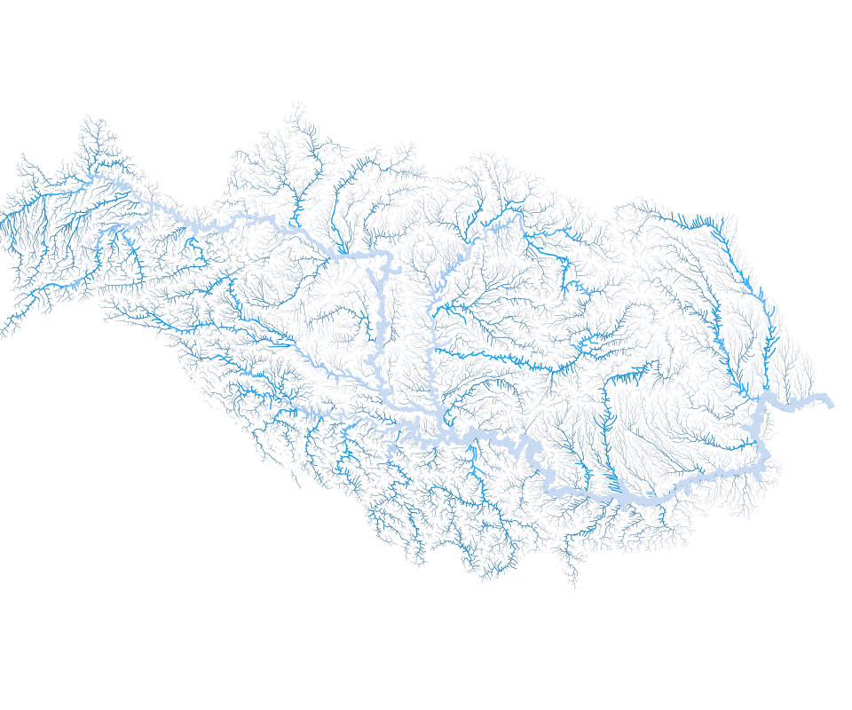

Інтерактивна карта забрудненості річок в Україні на основі даних Державного агентства водних ресурсів. На карті ‒ понад 400 пунктів контролю річкової води. Ви можете переглянути до 16 параметрів забруднення, а також з’ясувати, як його рівень змінювався протягом п’яти років.
On the map, the largest river basins in Ukraine are the Danube, the Dnipro, the Dniester, the Southern Bug, the Vistula, the Don.
You can click on the picture of the basin to the left of the map. Flowers on the map are clickable. Each flower in the river basin is a place where the State Water Resources Agency takes water for analysis. If the "flower" has pink petals - then the pollution exceeds the norm.
When you click on a flower, a new window with a graph and an enlarged "flower" appears on the screen. On the graph, you can track how the concentrations of the pollutant have changed in the past, and what it is now. The data is available for 5 years.
Each petal indicates a certain indicator for which water quality is estimated. You can click on the petals to see the graph for the selected parameter. The blue color of the line graph means that the value is within the normal range. The pink part of the line may have different shades depending on how much the indicator exceeds the norm. The brighter the line, the greater the excess. The horizontal dotted line on the map shows the norm for each indicator.
The "eye" icon above the graphic changes the display of a large flower to the version for visually impaired users. In this version, the petals with a diagonal stripe indicate improper quality on the selected indicator, and petals with dots - a satisfactory quality.
You can go back to the previous map scale by selecting another basin or by using the "-" button in the upper right corner of the map.
Ми нанесли на карту найбільші річкові басейни України. Користувачу потрібно клікнути на один з басейнів у меню ліворуч для того, щоб почати працювати з картою.
Після кліку карта прибирає всю зайву інформацію і залишає тільки обраний басейн та іконки (у вигляді «квітки») на ньому. Ними на карті позначені місця, де співробітники Держводагенства забирають воду для аналізів. Якщо у «квітки» рожевіють пелюстки — значить, забруднення перевищує норму. Наблизити карту можна за допомогою подвійного кліку або скориставшись спеціальною кнопкою в правому верхньому куті карти
Якщо натиснути на іконку, на екрані з’являється нове вікно з графіком та збільшеною «квіткою». На графіку можна відстежити, як змінювалась концентрація речовини-забруднювача в минулому, і якою вона є зараз. Що ж до «квітки», кожна її пелюстка позначає певний параметр за яким оцінюють якість води. На пелюстки можна натискати для того, щоб побачити графік для обраного показника. Блакитний колір лінії графіка означає, що показник знаходиться в межах норми. Рожева частина лінії може мати різні відтінки залежно від того, наскільки показник перевищує норму. Чим лінія яскравіша, тим більшим є перевищення.
Іконка «око» над графіком перемкне відображення великої квітки на версію для користувачів із вадами зору. В цій версії пелюстки з діагональною полоскою означають неналежну якість за обраним показником, а пелюстки в крапку — задовільну якість.
Щоб повернутись до попереднього (маленького) масштабу, знову клікніть на міні-карту потрібного басейну ліворуч від основної карти.
Над картою є кнопка «Хто забруднює річки в твоїй області». Натисніть на неї й оберіть свою область зі списку. Ви отримаєте список підприємств, які, за офіційними даними Держводагентства, забруднюють річки у вашому регіоні. Ці підприємства відповідальні за значну частину забруднення в річках. На жаль, дані про точні координати місць, де вони скидають речовини-забруднювачі, відсутні.
В мобільній версії відображається лише загальна картина якості води по басейнах українських річок, тому рекомендуємо переглядати проект на великому екрані (компʼютер, ноутбук).
Увага! Ви переглядаєте мобільну версію, без інтерактивності. Для того, щоб побачити деталі, використовуйте десктоп. Блакитні пелюстки квіток означають, що середнє значення показника якості в межах норми, рожеві - перевищення норми.
Дністер
Дунай
Вісла
Південний Буг
Дніпро
Після кліку карту можна буде зсунути вліво-вправо та вверх-вниз, щоб побачити приховану частину басейну.
Дон
×
Триває завантаження
мг/дм3
клікайте на пелюстки, аби побудувати графік для різних показників
Дністер
Дунай

Вісла
Південний Буг
Дніпро
Дон
Ми знаємо, що ці підприємства забруднюють воду. Чому вони продовжують це робити?
Підприємства повинні очищувати усю воду, яку скидають у річки. Але часом вони не можуть цього зробити, оскільки мають застарілі технології, а модернізація коштує надто дорого. Іноді необхідне обладнання взагалі відсутнє. В той же час деякі підприємства свідомо економлять на очисних спорудах, щоб отримати додатковий прибуток.
В таких випадках держава може надати підприємству право скидати в річки забруднену воду. Проте, кількість речовин, які вони можуть скинути, обмежують. Вона встановлює «гранично допустимі скиди», скорочено — ГДС.
ГДС потрібні для того, аби поступово зменшувати рівень забруднення. За право забруднювати довкілля підприємства платять екологічний податок. Якщо вони перевищують встановлені норми — то зобов’язані сплатити штраф.
Одна з функцій ГДС — зробити невигідним забруднення річок. В Україні діє державна стратегія екологічної політики. У ній закріплено, що до 2020 року кількість речовин-забруднювачів має зменшитись на 15%. Тому підприємства повинні модернізувати свої очисні споруди, щоб відповідати новим вимогам.
Оберіть свою область зі списку. Ви отримаєте список підприємств, які забруднюють річки у вашому регіоні. Ці підприємства відповідальні за значну частину забруднення в річках. Наприклад, цифра 284.3 біля ПРАТ АК «КИЇВВОДОКАНАЛ» означає, що підприємство cкинуло в річки 284.3 млн кубічних метрів забрудненої води. Нагадуємо, що в 1 кубічному метрі міститься 1000 літрів.